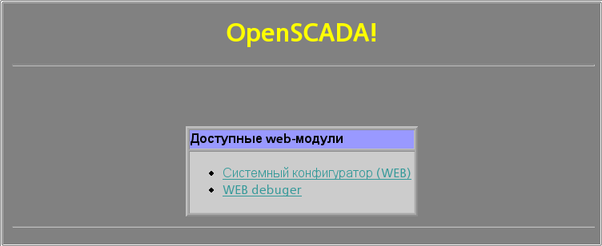

Предоставляет поддержку протокола HTTP для WWW-основанных пользовательских интерфейсов.
Лицензия:
GPL
Введение
Модуль транспортного протокола HTTP предназначен для реализации
поддержки сетевого протокола HTTP(Hypertext Transfer Protocol)
в системе OpenSCADA.
Протокол HTTP используется для передачи содержимого WWW. Так,
через HTTP передаются следующие типы документов: html, xhtml, png, java
и многие другие. Добавление поддержки HTTP в систему
OpenSCADA в комплексе с транспортом Sockets позволяет
реализовывать различные пользовательские функции на основе
WWW интерфейса. По состоянию на версию 1.2.5 модуль HTTP
реализует два основных метода протокола HTTP:
GET и POST. Модуль HTTP обеспечивает контроль целостности
HTTP-запросов и в комплекте с транспортом Sockets позволяет
“собирать” целостные запросы из их фрагментов.
Для гибкого подключения пользовательских интерфейсов
к данному модулю используется модульный механизм в рамках
самого модуля HTTP. В роли модулей используются модули подсистемы
“Пользовательские интерфейсы” с дополнительным информационным
полем “SubType” имеющим значение “WWW”.
В запросах к Web ресурсам принято использовать URL(Universal
Resource Locator), следовательно URL передаётся как основной
параметр через HTTP. Первый элемент запрашиваемого
URL используется для идентификации модуля UI. Например URL:
http://localhost:10002/WebCfg означает обращение к модулю WebCfg
на хосте http://localhost:10002. В случае ошибочного указания
идентификатора модуля или при обращении вообще
без идентификатора модуля, HTTP модуль генерирует диалог
с выбором одного из доступных пользовательских интерфейсов.
Пример диалога показано на рисунке 1. Диалог формируется
на языке XHTML 1.0 Transitional!

1 Модули пользовательского WEB-интерфейса
Модули пользовательского интерфейса (UI), предназначенные
для совместной работы с модулем HTTP, должны устанавливать
информационное поле “SubType” значением “WWW”. Для связи модуля
HTTP и модулей UI используется расширенный механизм
коммуникации. Этот механизм подразумевает экспорт интерфейсных функций.
В данном случае UI модули должны экспортировать функции:
void HttpGet( const string &url, string &page, const string &sender, vector<string> &vars ); — Метод GET c параметрами:
url – адрес запроса; page – страница с ответом; sender – адрес отправителя; vars – переменные запроса.
void HttpPost( const string &url, string
&page, const string &sender, vector<string> &vars,
const string &contein ); — Метод SET c параметрами:
url – адрес запроса; page – страница с ответом; sender – адрес отправителя; vars – переменные запроса; contein – параметры запроса SET.
Далее, в случае поступлении HTTP запроса GET будет вызываться
функция HttpGet, а в случае запроса SET будет вызываться
функция HttpPost в соответствующем модуле UI.